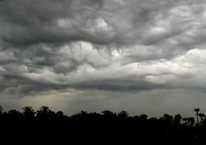
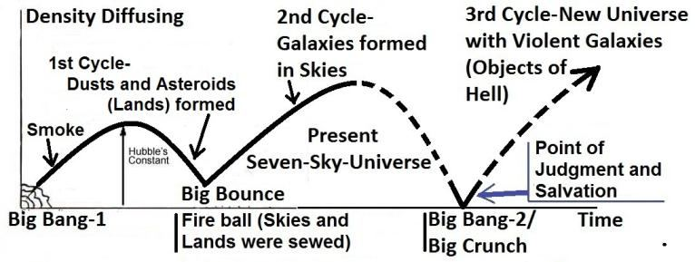
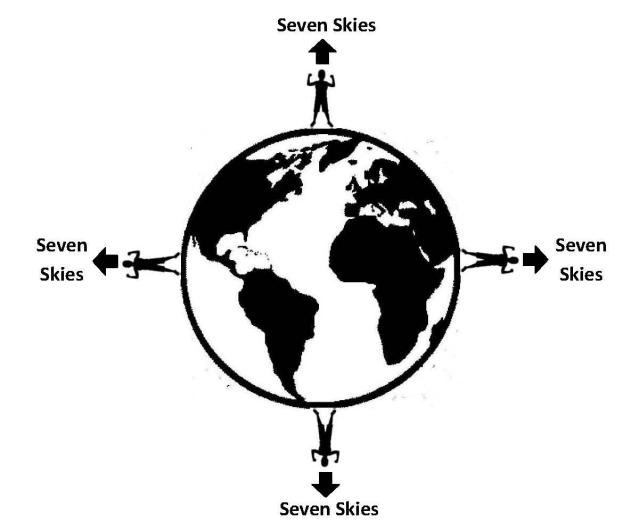

FIGURE 30.3 The most important wind that has been used by the sailing ships is the Trade Wind that flows in the Northern Hemisphere from the North-East. The winds could be harnessed alongside ocean currents. For example, the current in the North Atlantic rotates clockwise, allowing sailors to use the Trade Winds to reach America and then return to Europe by following the ocean currents. Columbus, for instance, sailed to America using the Trade Winds.
চিত্র 30_3 / Figure 30_3
চিত্র 30.3 পালতোলা জাহাজ দ্বারা ব্যবহৃত সবচেয়ে গুরুত্বপূর্ণ বায়ু হল বাণিজ্য বায়ু যা উত্তর-পূর্ব দিক থেকে উত্তর গোলার্ধে প্রবাহিত হয়। সমুদ্রের স্রোতের পাশাপাশি বাতাসকে ব্যবহার করা যেতে পারে। উদাহরণ স্বরূপ, উত্তর আটলান্টিকের স্রোত ঘড়ির কাঁটার দিকে ঘোরে, যার ফলে নাবিকরা ট্রেড উইন্ড ব্যবহার করে আমেরিকায় পৌঁছাতে পারে এবং তারপরে সমুদ্রের স্রোত অনুসরণ করে ইউরোপে ফিরে যেতে পারে। কলম্বাস, উদাহরণস্বরূপ, ট্রেড উইন্ডস ব্যবহার করে আমেরিকায় যাত্রা করেছিলেন।
চিত্র 30_3 / Figure 30_3
We did indeed send before thee apostles to their peoples, and they came to them with Clear Signs. Then to those who transgressed, We meted out Retribution, and it was due from Us to aid those who believed.
আমি আপনার পূর্বে তাদের সম্প্রদায়ের কাছে রসূল প্রেরণ করেছি এবং তারা তাদের কাছে সুস্পষ্ট নিদর্শন নিয়ে এসেছিল। অতঃপর যারা সীমালঙ্ঘন করেছিল তাদের প্রতি আমি প্রতিশোধ নিয়েছিলাম এবং যারা ঈমান এনেছিল তাদের সাহায্য করা আমাদের পক্ষ থেকে ছিল।
It is God Who sends the Winds, and they raise the Clouds. Then does He spread them in the sky, as He wills, and break them into parts, until thou see raindrops issue from the midst thereof. Then, when He has made them reach such of his servants as He wills, behold they do rejoice, even though before they received, just before this, they were dumb with despair!
আল্লাহই বায়ু প্রেরণ করেন এবং তারা মেঘকে উত্থাপন করেন। অতঃপর তিনি সেগুলোকে আকাশে ছড়িয়ে দেন, যেমন তিনি ইচ্ছা করেন এবং সেগুলোকে টুকরো টুকরো করে দেন, যতক্ষণ না আপনি তার মাঝ থেকে বৃষ্টির ফোঁটা দেখতে পান। অতঃপর, যখন তিনি তাদেরকে তাঁর বান্দাদের মধ্যে যাকে ইচ্ছা তাঁর কাছে পৌঁছে দেন, দেখুন তারা আনন্দিত হয়, যদিও তারা প্রাপ্তির আগে, এর ঠিক আগে, তারা হতাশায় মূক ছিল!
Mainly two kinds of clouds produce rain: Cumulonimbus cloud and Nimbostratus cloud. In Section 11 of Chapter 24, the Quran refers to cumulus clouds, specifically cumulonimbus clouds, which are towering clouds associated with strong winds, lightning, thunder, and hail. The above verses refer to Nimbostratus clouds, as it says, ―…He spread them in the sky, as He wills…‖ These verses do not describe strong winds, lightning, thunder, or hailstones, as Nimbostratus clouds are not typically associated with such phenomena. The Nimbostratus cloud forms a thick, sheet-like layer that spreads across the sky, with its edges often hidden from view. It is a low-altitude cloud, extending up to about 2 km in height, and is primarily responsible for steady, moderate to heavy rainfall. Unlike other cloud types, Nimbostratus clouds are not typically associated with strong winds, lightning, thunder, or hailstones. However, embedded Cumulonimbus clouds within the Nimbostratus formation can produce lightning, which is essential for the formation of nitrates, a type of fertilizer. The verses refer to it as a seasonal cloud, eagerly awaited by people to begin plowing their lands. If its arrival is delayed during the rainy season, farmers fall into despair, fearing drought and hunger. As the verses convey, ―Then when He has made them reach such of his servants as He wills, behold they do rejoice, even though before they received, just before this, they were dumb with despair!‖ As vapor rises, it cools and condenses into clouds. A cloud floats because the air inside it is warmer than the surrounding air. Similar to fog, clouds are carried by the wind or remain suspended in the air. The tiny water droplets in the cloud are not heavy enough to fall. The water droplets must reach at least 5 millimeters in diameter to fall as rain. The question is: how do raindrops emerge from the midst of the cloud? The droplets need to grow heavier. The uniformity of the cloud is broken by turbulent air, causing the smaller droplets to collide with each other. Through this process, they combine and form heavier droplets capable of falling. As a droplet begins to fall, it continues to mix with other droplets, becoming even larger. Thus, the verses say: ―…and break them (clouds) into parts, until thou see raindrops issue from the midst thereof‖.
প্রধানত দুই ধরনের মেঘ বৃষ্টি উৎপন্ন করে: কিউমুলোনিম্বাস ক্লাউড এবং নিম্বোস্ট্র্যাটাস ক্লাউড। 24 অধ্যায়ের 11 ধারায়, কুরআন কিউমুলাস মেঘের কথা উল্লেখ করেছে, বিশেষ করে কিউমুলোনিম্বাস মেঘ, যেগুলো প্রবল বাতাস, বজ্রপাত, বজ্রপাত এবং শিলাবৃষ্টির সাথে যুক্ত উঁচু মেঘ। উপরের আয়াতগুলো নিম্বোস্ট্রাটাস মেঘের কথা বলে, যেমন এটি বলে, ''...তিনি সেগুলিকে আকাশে ছড়িয়ে দেন, যেমন তিনি চান...'' এই আয়াতগুলি প্রবল বাতাস, বজ্রপাত, বজ্রপাত বা শিলাবৃষ্টিকে বর্ণনা করে না, কারণ নিম্বোস্ট্র্যাটাস মেঘ সাধারণত এই ধরনের ঘটনার সঙ্গে যুক্ত নয়। নিম্বোস্ট্র্যাটাস মেঘ একটি পুরু, চাদরের মতো স্তর তৈরি করে যা আকাশ জুড়ে ছড়িয়ে পড়ে, এর প্রান্তগুলি প্রায়শই দৃশ্য থেকে লুকিয়ে থাকে। এটি একটি নিম্ন-উচ্চতা মেঘ, উচ্চতা প্রায় 2 কিমি পর্যন্ত বিস্তৃত এবং এটি প্রাথমিকভাবে স্থির, মাঝারি থেকে ভারী বৃষ্টিপাতের জন্য দায়ী। অন্যান্য মেঘের ধরন থেকে ভিন্ন, নিম্বোস্ট্রাটাস মেঘ সাধারণত প্রবল বাতাস, বজ্রপাত, বজ্রপাত বা শিলাবৃষ্টির সাথে সম্পর্কিত নয়। যাইহোক, নিম্বোস্ট্র্যাটাস গঠনের মধ্যে এমবেড করা কিউমুলোনিম্বাস মেঘ বজ্রপাত করতে পারে, যা নাইট্রেট গঠনের জন্য অপরিহার্য, এক ধরনের সার। আয়াতগুলি এটিকে একটি মৌসুমী মেঘ হিসাবে উল্লেখ করে, লোকেরা তাদের জমি চাষ শুরু করার জন্য অধীর আগ্রহে অপেক্ষা করে। বর্ষাকালে এর আগমন বিলম্বিত হলে খরা ও ক্ষুধার আশঙ্কায় কৃষকরা হতাশায় পড়ে যায়। যেমন আয়াতগুলি বোঝায়, "অতঃপর যখন তিনি তাদের তাঁর বান্দাদের কাছে তাঁর ইচ্ছামত পৌঁছে দেন, তখন তারা আনন্দিত হয়, যদিও তারা পাওয়ার আগে, এর ঠিক আগে, তারা হতাশায় মূক ছিল!" বাষ্প বাড়ার সাথে সাথে এটি শীতল হয়ে মেঘে পরিণত হয়। একটি মেঘ ভাসছে কারণ এর ভিতরের বাতাস আশেপাশের বাতাসের চেয়ে উষ্ণ। কুয়াশার মতো, মেঘগুলি বাতাসের দ্বারা বাহিত হয় বা বাতাসে ঝুলে থাকে। মেঘের ক্ষুদ্র জলের ফোঁটাগুলি পড়ার মতো ভারী নয়। বৃষ্টির মতো পড়ার জন্য জলের ফোঁটাগুলি অবশ্যই কমপক্ষে 5 মিলিমিটার ব্যাস পর্যন্ত পৌঁছাতে হবে। প্রশ্ন হল: মেঘের মাঝ থেকে বৃষ্টির ফোঁটা কিভাবে বের হয়? ফোঁটাগুলি আরও ভারী হতে হবে। মেঘের অভিন্নতা উত্তাল বায়ু দ্বারা ভেঙে যায়, যার ফলে ছোট ছোট ফোঁটাগুলি একে অপরের সাথে সংঘর্ষে পড়ে। এই প্রক্রিয়ার মাধ্যমে, তারা একত্রিত হয় এবং পতিত হতে সক্ষম ভারী ফোঁটা গঠন করে। একটি ফোঁটা পড়তে শুরু করার সাথে সাথে এটি অন্যান্য ফোঁটার সাথে মিশে যেতে থাকে, আরও বড় হয়। সুতরাং, আয়াতগুলি বলে: "...এবং তাদের (মেঘ) টুকরো টুকরো করে দিন, যতক্ষণ না আপনি এর মধ্য থেকে বৃষ্টির ফোঁটা দেখতে পাচ্ছেন"।
FIGURE 30.4: Nimbostratus cloud dancing to issue Raindrops

চিত্র 30_4 / Figure 30_4
চিত্র 30.4: নিম্বোস্ট্র্যাটাস মেঘ বৃষ্টির ফোঁটা প্রকাশ করতে নাচছে
চিত্র 30_4 / Figure 30_4
Then contemplate the memorials of God's Mercy! How He gives life to the earth after its death! Verily, the same will give life to the men who are dead. And He has power over all things. And if We send a Wind from which they see (their tilth) turn yellow, behold, they become ungrateful thereafter! So, verily thou cannot make the dead to hear, nor can thou make the deaf to hear the call when they show their backs and turn away, nor can thou lead back the blind from their straying; only those will thou make to hear who believe in Our signs and submit.
তারপর ঈশ্বরের রহমতের স্মৃতির কথা চিন্তা করুন! তিনি কিভাবে পৃথিবীকে তার মৃত্যুর পর জীবন দান করেন! নিঃসন্দেহে, এটি মৃত পুরুষদের জীবন দেবে। আর তিনি সব কিছুর উপর ক্ষমতাবান। আর যদি আমি এমন বায়ু প্রেরণ করি যেখান থেকে তারা (তাদের চাষাবাদ) হলুদ হয়ে যেতে দেখে, দেখো, তখন তারা অকৃতজ্ঞ হয়ে যাবে। সুতরাং, আপনি মৃতদেরকে শোনাতে পারবেন না এবং আপনি বধিরকেও ডাক শোনাতে পারবেন না যখন তারা তাদের পিঠ দেখাবে এবং মুখ ফিরিয়ে নেবে এবং আপনি অন্ধদেরকে তাদের পথভ্রষ্টতা থেকে ফিরিয়ে আনতে পারবেন না। আপনি তাদেরকেই শোনাবেন যারা আমার নিদর্শনাবলীতে বিশ্বাস করে এবং আত্মসমর্পণ করে।
It is God Who created you in a state of weakness, then gave strength after weakness, then gave weakness and a hoary head after strength. He creates as He wills, and it is He Who has all knowledge and power. And the Day you stand, the Hour, the transgressors will swear that they tarried not but an hour; thus they were deluded! But those endued with knowledge and faith will say, "Indeed ye did tarry by God's Decree, until the Day of Forwarding (Dooms Day starting with the First Blow of Trumpet), and this is the Day of Forwarding (continuation of the same Day / said at the time of standing on the Land of Judgment), but ye were not aware!"
আল্লাহই তোমাদেরকে দুর্বল অবস্থায় সৃষ্টি করেছেন, অতঃপর দুর্বলতার পর শক্তি দিয়েছেন, অতঃপর শক্তির পর দুর্বলতা ও উর্বর মাথা দিয়েছেন। তিনি যেমন ইচ্ছা সৃষ্টি করেন এবং তিনিই সমস্ত জ্ঞান ও ক্ষমতার অধিকারী। আর যেদিন তুমি দাঁড়াবে সেই কেয়ামত, সীমালঙ্ঘনকারীরা শপথ করবে যে, তারা এক ঘণ্টা ব্যতীত অবস্থান করেনি; এভাবে তারা প্রতারিত হয়েছিল! কিন্তু যারা জ্ঞান ও বিশ্বাসে পরিপূর্ণ তারা বলবে, "নিশ্চয়ই তোমরা আল্লাহর হুকুম অনুসারে অগ্রসর হওয়ার দিন পর্যন্ত (কিয়ামতের দিন শুরু করে শিঙার প্রথম ফুঁ দিয়ে) দেরি করেছিলে এবং এটি ফরোয়ার্ড করার দিন (একই দিনের ধারাবাহিকতা / বিচারের ভূমিতে দাঁড়ানোর সময় বলা হয়েছিল), কিন্তু তোমরা সচেতন ছিলে না!"
The Day of Forwarding (Yawmi I-bathi) is a significant day. On that day, the universe (Samawaat) will transition into the next cycle. Therefore, it is called the 'Day of Forwarding: "Indeed ye did tarry by God's Decree, until the Day of Forwarding...‖. One day, the Trumpet (Soor) will be blown (the first blow), and everything will be destroyed; all living creatures will die. Eventually, everything will collapse into a Singularity (Big Crunch). The universe will be re-programmed for revival and resurrection. Immediately after the revival begins, the universe will attain the State of Thaqal (Heavy Mass), and the Resurrection of the Dead will occur. Thus, Resurrection and Judgment are events that belong to the revived universe (the next cycle of the universe). Information is never destroyed. It is possible to revive galaxies and living creatures even from a state of absolute collapse. The analysis of the 'Day of Forwarding,' commonly known as the Day of Qiyamah (Doomsday), unfolds in the following sequence: 1. Model of the Universe 2. Skies, according to the Quran 3. The Collapse and Re-creation of the Universe 4. The Roll-up-Closing of the Seven-Sky-Universe 5. Arrows of Time 6. Rolling and Order of the Universe: 7. Understanding the Events of Doom from Beginning 8. The Independent Contraction of the First (Innermost) Sky 9. The First Blow of Soor (Trumpet) 10. Merging to the ―Face of God‖ 11. Re-initiation 12. The Land of Resurrection - Holy Bible 13. Conclusion Background knowledge of the following topics will be helpful for understanding the discussion: The Large-Scale Structure of the Universe: Section-7 of Chapter-2 Jannaat: Section-23 of Chapter-3 Hell: Section 27 of Chapter 3 Creation of Universe: Section 4 of Chapter 21 Future of the Universe: Section 10 of Chapter 21
ফরওয়ার্ডিং দিন (ইয়াওমি আই-বাথি) একটি উল্লেখযোগ্য দিন। সেই দিন, মহাবিশ্ব (সামাওয়াত) পরবর্তী চক্রে রূপান্তরিত হবে। অতএব, এটিকে 'অগ্রসরের দিন' বলা হয়: "প্রকৃতপক্ষে তোমরা ঈশ্বরের আদেশে, ফরওয়ার্ডিং দিবস পর্যন্ত স্থির ছিলে..." একদিন, শিঙা (সুর) ফুঁক দেওয়া হবে (প্রথম আঘাত), এবং সবকিছু ধ্বংস হয়ে যাবে; সমস্ত জীবন্ত প্রাণী মারা যাবে। অবশেষে, সবকিছু ভেঙে পড়বে (একটি পুনঃপ্রোভার্সে পরিণত হবে)। পুনরুজ্জীবন এবং পুনরুত্থান শুরু হওয়ার পরপরই, মহাবিশ্ব থাকাল (ভারী ভর) অর্জন করবে এবং মৃতদের পুনরুত্থান ঘটবে এমন ঘটনা যা পুনরুজ্জীবিত মহাবিশ্বের (মহাবিশ্বের পরবর্তী চক্রটি জীবিত হওয়া পর্যন্ত সম্ভব নয়) নিখুঁত পতনের 'ডে অফ ফরওয়ার্ডিং', যা সাধারণত কিয়ামতের দিন (কিয়ামতের দিন) হিসাবে পরিচিত, নিম্নলিখিত ক্রমানুসারে উদ্ভাসিত হয়: 1. মহাবিশ্বের মডেল 2. স্কাইস, কুরআন অনুসারে 3. মহাবিশ্বের পতন এবং পুনঃসৃষ্টি 4. দ্য রোল-অ্যারিভার্স-অ্যারো-আপ। সময়ের 6. ঘূর্ণায়মান এবং মহাবিশ্বের ক্রম: 7. শুরু থেকে ধ্বংসের ঘটনাগুলি বোঝা 8. প্রথম (অভ্যন্তরীণ) আকাশের স্বাধীন সংকোচন 9. সূরের প্রথম আঘাত (ট্রুম্পেট) 10. 'ঈশ্বরের মুখ'-এর সাথে মিলিত হওয়া 11. পুনঃসূচনা - ভূমির পুনঃসূচনা 1। উপসংহার নিম্নলিখিত বিষয়গুলির পটভূমি জ্ঞান আলোচনাটি বোঝার জন্য সহায়ক হবে: মহাবিশ্বের বৃহৎ-স্কেল কাঠামো: অধ্যায়-2-এর বিভাগ-7 জান্নাত: অধ্যায়-3-এর অধ্যায়-23 জাহান্নাম: অধ্যায় 3-এর অধ্যায় 27 মহাবিশ্বের অধ্যায় 27 অধ্যায়: মহাবিশ্বের ভবিষ্যৎ: অধ্যায় 21 এর 10 অধ্যায়
1. Model of the Universe
1. মহাবিশ্বের মডেল
There are over 170 billion large galaxies in the observable universe, and they appear to be moving away from each other. The universe in its current cycle (2nd Cycle) originated from a Big Bounce and is expanding, or it is already expanded—since, when we observe galaxies, we are actually see them as they were in the past.
পর্যবেক্ষণযোগ্য মহাবিশ্বে 170 বিলিয়নেরও বেশি বড় গ্যালাক্সি রয়েছে এবং তারা একে অপরের থেকে দূরে সরে যাচ্ছে বলে মনে হচ্ছে। মহাবিশ্ব তার বর্তমান চক্রে (২য় চক্র) একটি বিগ বাউন্স থেকে উদ্ভূত হয়েছে এবং প্রসারিত হচ্ছে, বা এটি ইতিমধ্যেই সম্প্রসারিত হয়েছে - যেহেতু, আমরা যখন ছায়াপথগুলি পর্যবেক্ষণ করি, আমরা আসলে তাদের অতীতের মতো দেখতে পাই।
FIGURE 30.5: Cyclic Universe

চিত্র 30_5 / Figure 30_5
চিত্র 30.5: চক্রীয় মহাবিশ্ব
চিত্র 30_5 / Figure 30_5
Eventually, the universe may begin to contract and ultimately collapse into a state known as the Big Crunch. The Big Crunch represents a type of singularity, a point where natural laws break down, making it impossible to predict what might emerge from it. From this Big Crunch, a new universe may be born (3rd Cycle), which could be considered a second Big Bang (Big Bang-2). See the figure above. 2. Skies, according to the Quran
অবশেষে, মহাবিশ্ব সংকুচিত হতে শুরু করতে পারে এবং শেষ পর্যন্ত বিগ ক্রাঞ্চ নামে পরিচিত একটি রাজ্যে ভেঙে পড়তে পারে। বিগ ক্রাঞ্চ এক ধরনের এককতার প্রতিনিধিত্ব করে, এমন একটি বিন্দু যেখানে প্রাকৃতিক আইন ভেঙ্গে যায়, এটি থেকে কী হতে পারে তা ভবিষ্যদ্বাণী করা অসম্ভব করে তোলে। এই বিগ ক্রাঞ্চ থেকে, একটি নতুন মহাবিশ্বের জন্ম হতে পারে (তৃতীয় চক্র), যা দ্বিতীয় মহাবিস্ফোরণ (বিগ ব্যাং-2) হিসাবে বিবেচিত হতে পারে। উপরের চিত্রটি দেখুন। 2. কুরআন অনুযায়ী আকাশ
The Quran states that the universe is structured into seven skies. The large-scale structure of the universe has yet to be fully discovered. Scientists currently assume the universe is uniform and isotropic, meaning that matter is evenly distributed throughout space when observed over very large distances, and that no direction appears different from another. This idea is known as the Cosmological Principle. A universe that follows the Cosmological Principle can exhibit different curvatures: it may be negatively curved, positively curved, or flat. Experiments conducted in the early twenty-first century suggest that the universe is most likely flat. This concept is discussed in detail in Section-10 of Chapter-21, under the heading 'Future of the Universe. In Section-7 of Chapter-2, we discussed the Large- Scale Structure of the Universe. I argued, based on the Quran, that the universe is curved into seven concentric spherical waves of space (one sky inside another, resembling the layers of an onion). These waves of space are the Skies. Each Sky contains a proportional number of galaxies and other matter. Despite the formation of Skies, the space remains continuous.
কুরআন বলে যে মহাবিশ্ব সাত আকাশে গঠিত। মহাবিশ্বের বৃহৎ আকারের কাঠামো এখনও সম্পূর্ণরূপে আবিষ্কৃত হয়নি। বিজ্ঞানীরা বর্তমানে অনুমান করেছেন যে মহাবিশ্ব অভিন্ন এবং আইসোট্রপিক, যার অর্থ খুব বড় দূরত্বে পর্যবেক্ষণ করা হলে বস্তুটি মহাকাশ জুড়ে সমানভাবে বিতরণ করা হয় এবং কোনও দিক অন্য থেকে আলাদা বলে মনে হয় না। এই ধারণাটি কসমোলজিক্যাল প্রিন্সিপল নামে পরিচিত। মহাজাগতিক নীতি অনুসরণ করে এমন একটি মহাবিশ্ব বিভিন্ন বক্রতা প্রদর্শন করতে পারে: এটি নেতিবাচকভাবে বাঁকা, ইতিবাচকভাবে বাঁকা বা সমতল হতে পারে। একবিংশ শতাব্দীর গোড়ার দিকে পরিচালিত পরীক্ষাগুলি পরামর্শ দেয় যে মহাবিশ্ব সম্ভবত সমতল। এই ধারণাটি 'মহাবিশ্বের ভবিষ্যত' শিরোনামে অধ্যায়-21-এর বিভাগ-10-এ বিশদভাবে আলোচনা করা হয়েছে। অধ্যায়-2-এর সেকশন-7-এ, আমরা মহাবিশ্বের বৃহৎ-স্কেল কাঠামো নিয়ে আলোচনা করেছি। আমি কুরআনের উপর ভিত্তি করে যুক্তি দিয়েছিলাম যে মহাবিশ্ব মহাকাশের সাতটি কেন্দ্রীভূত গোলাকার তরঙ্গে বাঁকা (একটি আকাশ অন্যটির ভিতরে, একটি পেঁয়াজের স্তরের মতো)। মহাকাশের এই তরঙ্গগুলি হল আকাশ। প্রতিটি আকাশে আনুপাতিক সংখ্যক ছায়াপথ এবং অন্যান্য পদার্থ থাকে। আকাশের গঠন সত্ত্বেও, স্থানটি অবিচ্ছিন্ন থাকে।
―And built over you Seven Skies‖ [Al Quran 79:12] A man standing in India has Seven Skies above him, just as a man standing in America has Seven Skies above him. Everyone on the spherical planet Earth has Seven Skies above his head. Therefore, the Skies must be spherical in shape, with each one inside the other. Our Earth is located in the First, or Innermost, Sky.
"এবং তোমার উপরে সাত আকাশ নির্মিত" [আল কুরআন 79:12] ভারতে দাঁড়িয়ে থাকা একজন লোকের উপরে সাতটি আকাশ রয়েছে, যেমন আমেরিকাতে দাঁড়িয়ে থাকা একজন ব্যক্তির উপরে সাতটি আকাশ রয়েছে। গোলাকার গ্রহ পৃথিবীর প্রত্যেকের মাথার উপরে সাতটি আকাশ রয়েছে। অতএব, আকাশগুলি অবশ্যই গোলাকার আকৃতির হতে হবে, একে অপরের ভিতরে। আমাদের পৃথিবী প্রথম বা অন্তরতম আকাশে অবস্থিত।
FIGURE 30.6: We are in the First / Innermost Sky

চিত্র 30_6 / Figure 30_6
চিত্র 30.6: আমরা প্রথম / অন্তঃস্থ আকাশে আছি
চিত্র 30_6 / Figure 30_6
The Quran highlights an important property of the sky: it can be rolled up:
কুরআন আকাশের একটি গুরুত্বপূর্ণ সম্পত্তি তুলে ধরে: এটি গুটিয়ে নেওয়া যেতে পারে:
―On the day when We will roll up the Skies (Universe) like the rolling up of the scroll for writings…‖ [Al Quran 21: 104] How the universe, with its 'spherical waves of space' (Skies), can be collapsed by rolling is discussed subsequently. So far, no reliable method has been discovered to determine the distance of outlying celestial objects, making direct observation-based mapping of the universe impossible. However, the discovery of Walls, Filaments, Super Voids, and the Great Attractor has enabled scientists to predict the likely structure of the universe. Below, I have briefly discussed these phenomena. The distribution of matter throughout the universe also suggests the existence of the Skies.
"যেদিন আমরা আকাশকে (মহাবিশ্ব) গুটিয়ে নেব লেখার জন্য স্ক্রোলের মতন..." [আল কুরআন 21:104] মহাবিশ্ব কীভাবে তার 'স্পেসের গোলক তরঙ্গ' (আকাশ) দিয়ে গড়িয়ে পড়তে পারে তা পরবর্তীতে আলোচনা করা হয়েছে। এখন পর্যন্ত, মহাবিশ্বের প্রত্যক্ষ পর্যবেক্ষণ-ভিত্তিক ম্যাপিং অসম্ভব করে বহির্ভূত মহাকাশীয় বস্তুর দূরত্ব নির্ধারণের জন্য কোনো নির্ভরযোগ্য পদ্ধতি আবিষ্কৃত হয়নি। যাইহোক, দেয়াল, ফিলামেন্টস, সুপার ভয়ডস এবং গ্রেট অ্যাট্রাক্টর আবিষ্কার বিজ্ঞানীদের মহাবিশ্বের সম্ভাব্য কাঠামোর পূর্বাভাস দিতে সক্ষম করেছে। নীচে, আমি এই ঘটনাগুলি সংক্ষিপ্তভাবে আলোচনা করেছি। সমগ্র মহাবিশ্ব জুড়ে পদার্থের বন্টনও আকাশের অস্তিত্বের ইঙ্গিত দেয়।
2a. Wall: A Wall is a sheet of galaxies that can span billions of light years. The Superclusters are now understood to be subordinate to the enormous Walls.
2ক. প্রাচীর: একটি প্রাচীর হল ছায়াপথের একটি শীট যা কোটি কোটি আলোকবর্ষ বিস্তৃত হতে পারে। সুপারক্লাস্টারগুলি এখন বিশাল দেয়ালের অধীনস্থ বলে বোঝা যায়।
2b. Filaments: The Filaments are the largest known structures in the universe formed out of gravitationally bound galaxies. These are thread like structures with typical lengths of 50 to 80 h-1 mega parsecs. Parts of a Filament, where large numbers of galaxies are very close to each other are known as Superclusters. Filaments are seen around the boundaries of voids.
2 খ. ফিলামেন্টস: ফিলামেন্ট হল মহাবিশ্বের বৃহত্তম পরিচিত কাঠামো যা মহাকর্ষীয়ভাবে আবদ্ধ ছায়াপথ থেকে গঠিত। এগুলি হল থ্রেডের মতো কাঠামো যার সাধারণ দৈর্ঘ্য 50 থেকে 80 h-1 মেগা পার্সেক। একটি ফিলামেন্টের অংশ, যেখানে বিপুল সংখ্যক ছায়াপথ একে অপরের খুব কাছাকাছি থাকে তারা সুপারক্লাস্টার নামে পরিচিত। শূন্যতার সীমানার চারপাশে ফিলামেন্টগুলি দেখা যায়।
2c. Voids: In more recent studies, the universe appears as a collection of giant bubble-like voids separated by walls and filaments. This network is clearly visible in 2dF Galaxy Red Shift Survey. Voids occur on the scale of 100 MPC. 2d. Great Attractor: The Great Attractor is an immensely powerful gravitational anomaly, which appears in the direction of the Centaurus at about 200 million light years away from the Earth. All galaxies within a radius of 250 million light years are flowing toward the Great Attractor on the order of 600 km/Sec.
2 গ. শূন্যস্থান: সাম্প্রতিক গবেষণায়, মহাবিশ্বকে দেয়াল এবং ফিলামেন্ট দ্বারা বিভক্ত বিশালাকার বুদবুদ-সদৃশ শূন্যতার সংগ্রহ হিসাবে দেখা যায়। এই নেটওয়ার্কটি 2dF গ্যালাক্সি রেড শিফট সার্ভেতে স্পষ্টভাবে দৃশ্যমান। শূন্যতা 100 MPC স্কেলে ঘটে। 2d. গ্রেট অ্যাট্রাক্টর: গ্রেট অ্যাট্রাক্টর হল একটি অত্যন্ত শক্তিশালী মহাকর্ষীয় অসঙ্গতি, যা পৃথিবী থেকে প্রায় 200 মিলিয়ন আলোকবর্ষ দূরে সেন্টোরাসের দিকে প্রদর্শিত হয়। 250 মিলিয়ন আলোকবর্ষের ব্যাসার্ধের সমস্ত ছায়াপথগুলি 600 কিমি/সেকেন্ডের ক্রমে গ্রেট অ্যাট্রাক্টরের দিকে প্রবাহিত হচ্ছে।
2e. Observational Evidence of Skies: The cosmologists have collected enough data on the nearby universe, which shows us up to the 2nd and 3rd skies.
2ই. আকাশের পর্যবেক্ষণমূলক প্রমাণ: কসমোলজিস্টরা কাছাকাছি মহাবিশ্বের পর্যাপ্ত তথ্য সংগ্রহ করেছেন, যা আমাদেরকে ২য় এবং ৩য় আকাশ পর্যন্ত দেখায়।